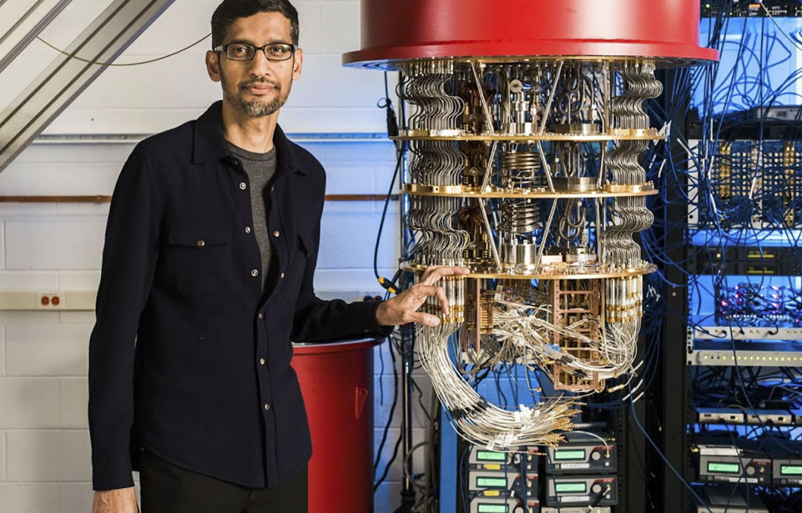

Google franchit un obstacle majeur sur la route de l'ordinateur quantique
Date de publication : 9 décembre 2024
Auteur : Le Figaro
En décembre 2024, l'équipe Google Quantum AI a annoncé une avancée majeure dans la correction des erreurs quantiques, un défi fondamental pour rendre les ordinateurs quantiques fonctionnels à grande échelle. Grâce à une nouvelle approche de codage et à l'utilisation de qubits logiques, ils ont réduit significativement les taux d'erreurs lors des calculs quantiques.
Cette avancée pourrait accélérer le développement des systèmes quantiques capables de traiter des données sensibles, notamment dans les domaines de la cryptographie et de la simulation de molécules complexes. Google estime que cette technologie permettra d'atteindre un calcul quantique véritablement utile dans les prochaines années.
Bien que le chemin soit encore long avant de remplacer les ordinateurs classiques, cette percée alimente l'enthousiasme pour un avenir où les ordinateurs quantiques résoudront des problèmes jusque-là insolubles.